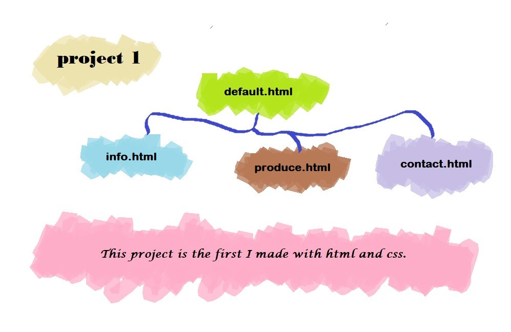
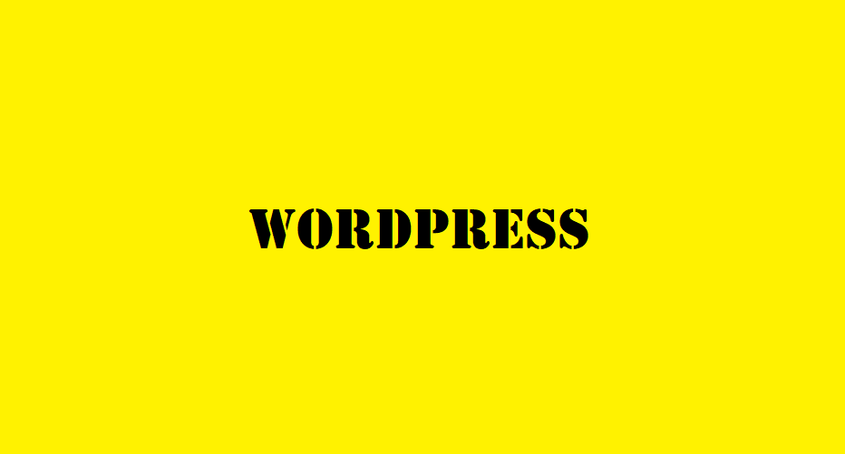

-

This project is my first project made with HTML and CSS. This site is designed
to be delivered directly from the farm to consumers without going through
any intermediate steps. You can't go shopping yet, but you can see information
about each farm and its produce.
-  This site shows the information on my hobby, soap making, and product information on natural handmade soaps. It contains descriptions of ingredients for each type of natural soap and its efficacy. It is a site where you can feel the scent and freshness of natural soap.
Click on the picture to go to the project